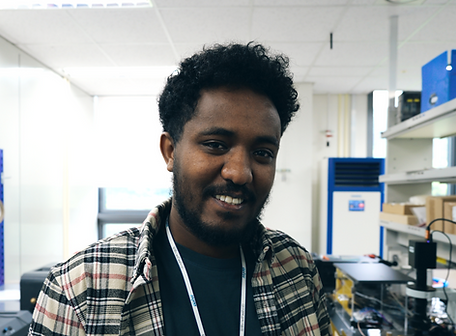
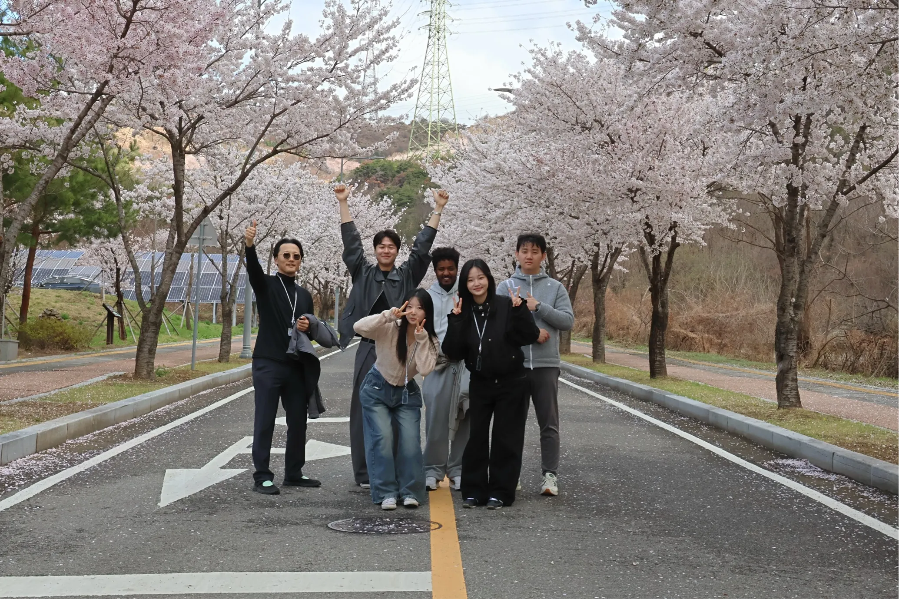
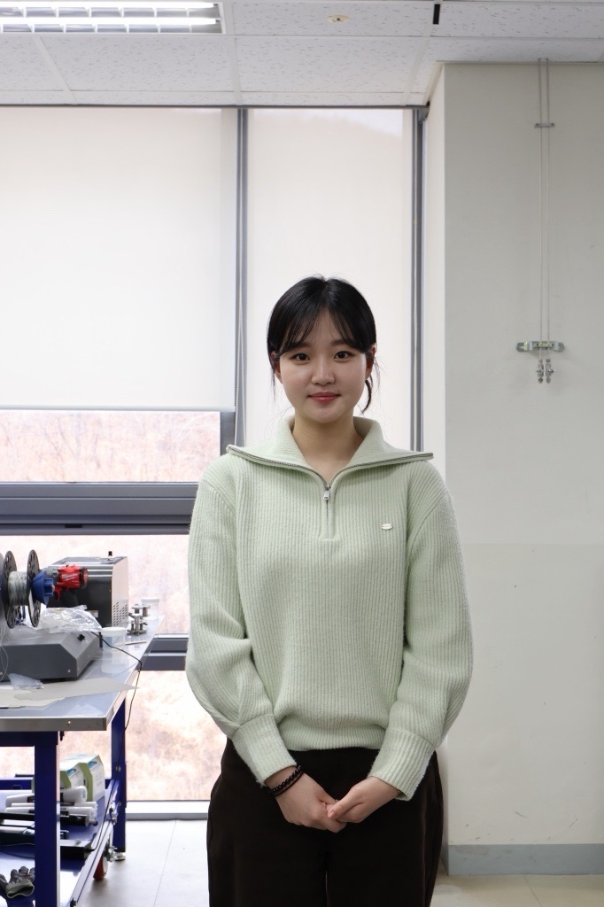
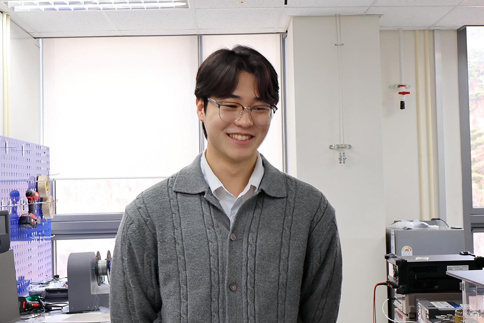

박사과정 연구원
Negasi Teklay Weldesemat
Myongji Univ. MSc
딥러닝 기반 소재 탐색과 GaOx 기반 전자소자 제작 기술을 연구하고 있습니다.
구성원과 멘토링
EMDP Lab은 의도적으로 작은 규모를 유지합니다. 덕분에 새 구성원을 밀착 지도하고 기술적 문제를 빠르게 발견하며, 연구가 흩어지지 않고 실제 성과로 이어지도록 관리할 수 있습니다.
새로 합류하는 학생은 직접적인 멘토링과 실무 중심의 연구실 훈련, 현재 연구실을 함께 만들어가는 구성원들과의 긴밀한 협업을 경험할 수 있습니다.
연구실 사진
2026년 3월 31일 화요일에 촬영한 EMDP Lab 단체 사진입니다.


지도교수
엄밀한 실험과 빠른 피드백, 그리고 지나치기 쉬운 물리 현상을 세심하게 연구하면 유용한 공학적 진보로 이어질 수 있다는 믿음을 중심으로 연구실을 운영합니다.
저는 연구를 사랑합니다. 연구는 관찰한 현상 뒤의 메커니즘을 이해하고 싶은 마음에서 시작합니다. EMDP Lab에서는 그 호기심을 공학적 질문으로 바꾸고, 다시 데이터로 입증할 수 있는 실험과 공정, 소자로 발전시킵니다.
흥미로운 결과를 만드는 것뿐 아니라 학생이 명확하게 사고하고 정확하게 소통하며 기술적으로 신뢰할 수 있는 연구를 수행하도록 돕는 것이 목표입니다.
현재 구성원

박사과정 연구원
Myongji Univ. MSc
딥러닝 기반 소재 탐색과 GaOx 기반 전자소자 제작 기술을 연구하고 있습니다.

석박사통합과정 연구원
Kangwon National Univ. BS
연구 주제 준비 중

석박사통합과정 연구원
Kangwon National Univ. BS
연구 주제 준비 중

석사과정 연구원
Kumoh National Institute of Technology. BS
연구 주제 준비 중
연구실 기록
인턴과 졸업생 기록을 통해 새로운 연구자가 어떤 방식으로 연구실에 합류했고 어떤 주제를 수행했는지 확인할 수 있습니다.
인턴십
2025년 동계 인턴 및 현재 인턴 · DGIST
Elastocaloric effect
졸업생
2025년 하계 인턴
GaOx semiconductor fabrication
졸업생
2024년 동계 인턴 / 2025년 하계 인턴
Elastocaloric effect
연구실 합류
연구 주제를 먼저 살펴본 뒤 최신 CV를 보내는 것이 가장 빠른 시작 방법입니다.
연락처
대구광역시 달성군 현풍읍 테크노중앙대로 333, 42988
합류를 고민하고 있다면 이메일을 남겨주세요. 연구실에서 연락드리겠습니다.